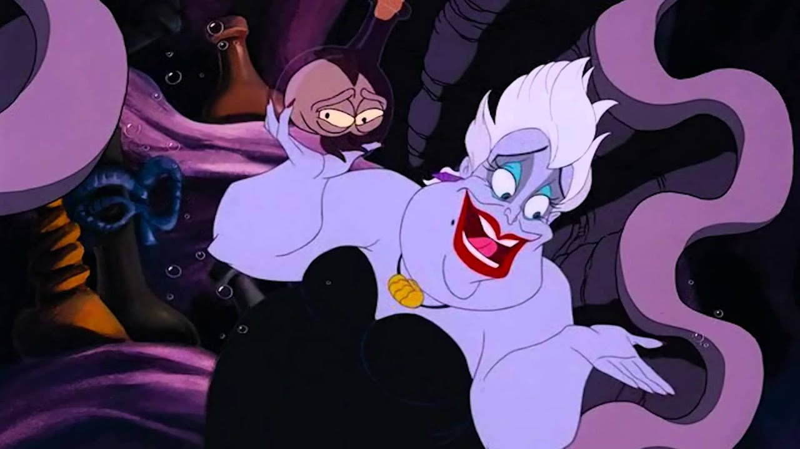

УРСУЛА
Внешность
Урсула выглядит как толстая женщина с бледной серо-лавандовой кожей и короткими седыми волосами, чья нижняя часть тела переходит из человеческой в осьминожью. Это говорит о том, что суть морской ведьмы - ловить щупальцами и не отпускать своих жертв.
Несмотря на внутреннюю злобу, она ухаживает за собой, пользуется самодельной косметикой и носит разнообразные украшения из морских ракушек, а именно: пурпурные серьги и большой кулон в виде золотой раковины. Её осминожья часть напоминает черное вечернее платье и, что необычно, имеет всего шесть щупалец.
Способности
Урсула - опытная ведьма и ее магические способности, даже без трезубца, очень могущественны. Она великолепно колдует и варит разнообразные зелья, владеет способностью менять собственный облик, а когда дело доходит до физической силы - то она уступает лишь королю Тритону. Тех, кто заключает с ней сделки и не оплачивает их, она превращает в полиповых червей. Также она способна выпускать ядовитые чернила, которые она применила для того, чтобы избавиться от "Злощастья", которое появилось в мультсериале "Русалочка".
Характер
По своей природе Урсула очень мрачная и зловещая колдунья со своеобразным чувством юмора. Она печально известна среди всех жителей морей и одно ее упоминание вызывает у каждого трепет. Она очень тщеславна, коварна и властолюбива, но обладает искусным ораторским талантом.
Дабы добиться своего, она манипулирует русалками, представая перед ними как сама добродетель и заключает с ними нерушимые колдовские контракты, обещая "отвести все их невзгоды", суть которых на самом деле - приблизить морскую ведьму к её основной цели или просто позабавить ее. Нарушение этих контрактов чревато ужасными последствиями, но при этом они законны (так Тритон не смог уничтожить контракт Ариэль).
В отличии от многих диснеевских злодеев, Урсула очень любит своих приспешников - Флотсама и Джетсама, которых она ставит выше всего на свете. Ведьма заботится о них и даже называет "своими пупсиками". Впрочем, Урсула требует соблюдения этикета в её пещере, на что указывает её замечание Ариэль при их первой встрече.
Происхождение
Изначально Урсула задумывалась, как сестра Тритона. Так как по оригинальной версии, Тритон и Урсула были детьми Посейдона, который вручил своим детям магические артефакты. Тритон получил трезубец, а Урсула - ракушку. По оригинальному сюжету, этими вещами могли пользоваться только родственники Посейдона (во второй полнометражке, когда Мелоди крадет трезубец, Себастьян упоминает этот факт), а в конце полнометражки Урсула полноценно пользуется трезубцем Тритона, что подтверждает их родственную связь. Имеет младшую сестру - Моргану. Во второй части мы выясняем, что Моргана ненавидит свою сестру, потому что в детстве их мать уделяла ей больше внимания. Также известно, что Урсула была сильнее Морганы. Когда Мелоди просит сделать ее русалкой, Моргана достает зелье Урсулы, с помощью которого исполняет её желание. Так же в бонусном видео к первой части показан удаленный персонаж Гарольд, который должен был найти озёрную лилию для Урсулы, взамен на красивую внешность (мышцы, силу). Как оказалось, в эту пору лилии не цветут, соответственно Гарольд не справился с заданием и отправился в коллекцию душ.
Появления
Когда Урусла впервые появляется в мультфильме, она через монолог рассказывает свою историю: когда-то давно она жила в королевском дворце царя Тритона, правителя подводного города Атлантика, пока не была изгнана. С тех пор Урсула поселилась в останках огромного левиафана, где она живёт и по сей день, строя планы, как отомстить Тритону и стать королевой Атлантики.
Вскоре она с помощью Флотсама и Джетсама обманывает Ариэль. Она даёт ей ноги на три дня взамен на голос (вероятно Урсула знала, что Эрик знал только её голос). Видя, что Ариэль почти его поцеловала, она решается вступить в игру. Она превращается в девушку Ванессу и голосом Ариэль очаровывает Эрика. Очаровав его, она добивается немедленной свадьбы. Однако Скаттл, пролетая мимо корабля слышит её истинный голос, а затем видит её истинный облик в зеркале. Этого оказалось достаточно, чтобы прямо на церемонии её начали атаковать разные морские обитатели. Хотя она и выдаёт себя (Скаттл разбил ракушку с голосом), она забирает Ариэль. Под водой её пытается атаковать Тритон, но её договор с Ариэль законный. Она предлагает обменять Ариэль на трезубец, и Тритон соглашается. В результате он превращается в червя. Урсула угрожает Ариэль, но тут появляется Эрик. Урсула пытается его уничтожить, но попадает в своих приспешников. От горя и гнева Урсула превращается в гигантского монстра. Она говорит им, что она теперь повелительница океанов и морей и она пытается их убить. Она загоняет Ариэль на дно сотворённого ею водоворота и пытается убить принцессу. Но Эрик направляется на одном из поднятых со дна кораблей спасти её, он направляет корабль на Урсулу и носовой мачтой пронзает её живот, тем самым уничтожив её. Урсула погрузилась под воду и сгинула, распавшись в морскую пену. После смерти злой морской ведьмы, её заклятие теряет свою силу - все черви превращаются обратно в русалок и в русалов, и всё возвращается на свои места.